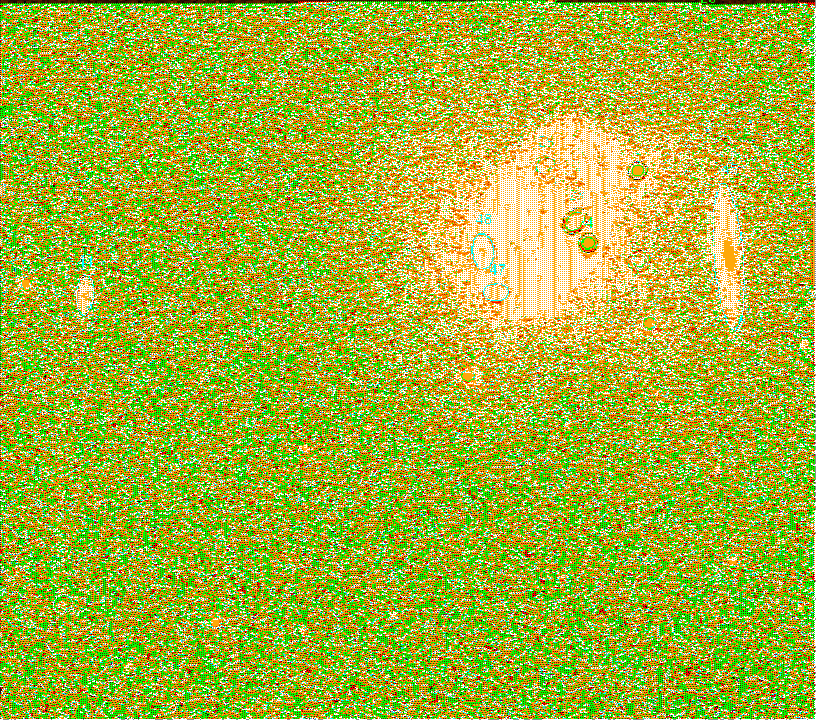

XMM-Newton Science Analysis System
omdetect (omdetect-5.36.1) [xmmsas_20170112_1337-16.0.0]
Figure 1 shows an example of a OM image with the detected ds9 source regions- to enable the regions to be seen more clearly,
only part of the image is shown.
Figure 1:
Example OM image showing the ds9 regions of the detected sources
|  |
The ds9 source regions in this image have their number in the source-list table written above them (in green
if a point-like source or cyan if an extended source). Each source has one or more circles/ellipses
centred on its computed coordinates. The innermost circle/ellipse identifies the source as either point-like (green) or
extended (cyan).
Some features of these regions are now described:
- Source 34 has green and blue circles, identifying it as a point-source and lying close to an edge of the image.
- Sources 43, 6 and 17 have green and magenta circles, identifying them as a point-sources and lying close to a read-out streak (barely discernible- for source 43
the star responsible for the streak is off the image, for the other two sources source 2 is responsible).
- Many sources towards the upper-right of the image have red circles/ellipses indicating that they lie within the central-enhancement region.
- Sources 2 and 4 have green and black circles, indicating that they are point-sources and are very bright with likely modula-8 patterns.
- Sources 28 and 17 have also green and black circles, but in their case the black circles indicate that they lie close to a very bright source (source 4).
XMM-Newton SOC/SSC -- 2017-01-12